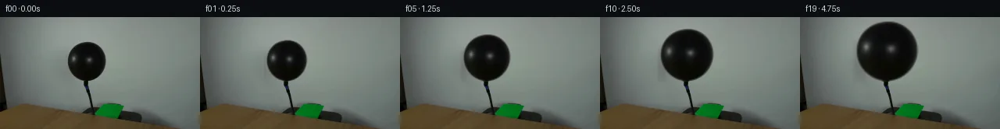

![首帧]()

Round 00
2026-11-04T22:59:08.045021+00:00像素候选变化代码 +147/−0inspection 更新
pixels 058832a2d5fd4d1f · code 6ce184394cbceb4e
查看本轮 generate.py 真实 diff
--- previous/generate.py
+++ current/generate.py
@@ -0,0 +1,147 @@
+"""Local source-pixel reconstruction and anchored inflation of the black balloon."""
+from pathlib import Path
+import json
+import numpy as np
+from PIL import Image, ImageDraw
+from scipy.ndimage import distance_transform_edt, map_coordinates, gaussian_filter
+from artifact_io import save
+
+ROOT = Path(__file__).resolve().parent
+SOURCE = np.array(Image.open(ROOT / 'first_frame.png').convert('RGB'))
+H, W = SOURCE.shape[:2]
+Y, X = np.mgrid[:H, :W].astype(np.float64)
+
+
+def wall_reconstruction():
+ """Fit the nearby photographed wall, excluding the balloon and hose."""
+ xx = (X - 110) / 50
+ yy = (Y - 57) / 50
+ basis = np.stack([np.ones_like(X), xx, yy, xx * xx, xx * yy,
+ yy * yy, xx**3, xx * yy**2], axis=-1)
+ fit = (X >= 65) & (X <= 165) & (Y >= 12) & (Y <= 103)
+ fit &= ~((X >= 83) & (X <= 139) & (Y >= 28) & (Y <= 84))
+ fit &= ~((X >= 103) & (X <= 122) & (Y >= 80))
+ coeff = np.linalg.lstsq(basis[fit], SOURCE[fit].astype(float), rcond=None)[0]
+ wall = np.clip(basis @ coeff, 0, 255)
+ return wall
+
+
+def source_layer(wall):
+ """Recover a premultiplied foreground with the source's antialiased edge."""
+ crop = (X >= 84) & (X <= 138) & (Y >= 29) & (Y <= 82)
+ gray = SOURCE.mean(axis=2)
+ interior = crop & (gray < 60)
+ distance = distance_transform_edt(interior)
+ bg = wall.mean(axis=2)
+ alpha = np.clip((bg - gray) / np.maximum(bg - 11.0, 1), 0, 1)
+ # Dark pixels deep inside the object include its highlights and are opaque.
+ alpha[distance >= 1.5] = 1
+ alpha *= crop
+ # Remove tiny photograph noise outside the silhouette without imposing an ellipse.
+ alpha[alpha < 0.022] = 0
+ premult = SOURCE.astype(float) - (1 - alpha[..., None]) * wall
+ premult = np.clip(premult, 0, 255) * (alpha > 0)[..., None]
+ # The reconstructed wall only replaces the source object's pixels.
+ background = SOURCE.astype(float).copy()
+ background[alpha > 0] = wall[alpha > 0]
+ return alpha, premult, background
+
+
+def growth(u):
+ """Constant volumetric input, with modest rounding as latex stretches."""
+ volume = 1 + ((1.6**2) * 1.52 - 1) * u
+ lo, hi = 0.0, 1.0
+ for _ in range(48):
+ g = (lo + hi) / 2
+ v = (1 + .6 * g)**2 * (1 + .52 * g)
+ if v < volume:
+ lo = g
+ else:
+ hi = g
+ g = (lo + hi) / 2
+ return 1 + .6 * g, 1 + .52 * g
+
+
+def render(alpha, premult, background, sx, sy):
+ # Four subpixel samples resolve the soft contour during continuous growth.
+ # The fixed lower anchor keeps the black neck and blue hose fitting attached.
+ anchor_x, anchor_y = 110.0, 82.0
+ a = np.zeros((H, W), float)
+ p = np.zeros((H, W, 3), float)
+ for dx, dy in [(-.25, -.25), (.25, -.25), (-.25, .25), (.25, .25)]:
+ src_x = anchor_x + (X + dx - anchor_x) / sx
+ src_y = anchor_y + (Y + dy - anchor_y) / sy
+ coords = np.array([src_y, src_x])
+ a += map_coordinates(alpha, coords, order=1, mode='constant', cval=0) / 4
+ for c in range(3):
+ p[..., c] += map_coordinates(premult[..., c], coords,
+ order=1, mode='constant', cval=0) / 4
+ result = p + (1 - a[..., None]) * background
+ # Original neck and all pixels below it remain fixed.
+ result[Y >= 83] = SOURCE[Y >= 83]
+ # Avoid changing background pixels outside either foreground coverage.
+ active = (a > .0001) | (alpha > 0)
+ result[~active] = SOURCE[~active]
+ return np.clip(np.rint(result), 0, 255).astype(np.uint8)
+
+
… diff truncated; 60 more lines …